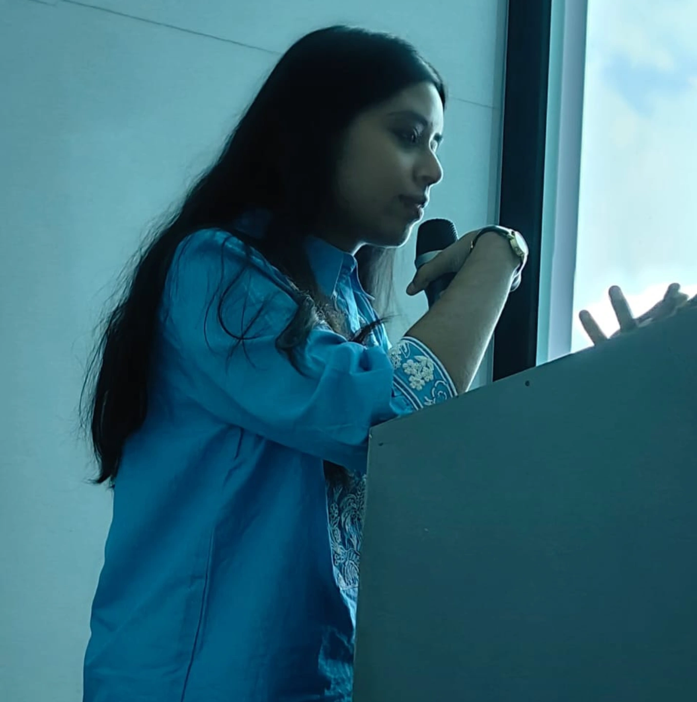

About

I'm an independent researcher and Assistant Editor at The Review of Democracy, an online journal hosted by the CEU Democracy Institute in Budapest. My academic background is in English Literature, and my research sits at the intersection of feminist theory, memory studies, and the politics of South Asian folk and indigenous art — particularly how gender, collective memory, visual culture, and democratic expression talk to each other in postcolonial contexts.
I'm also a mood-based artist. My artwork exploring the traditional Kohbar motif has been exhibited, and I hold a Junior Diploma in Indian Classical Music. So the classical vocalist in me is never too far from the researcher.